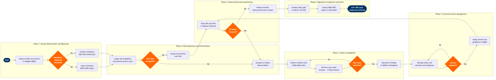

| Step | L4 Step Name | KPI / Target | Pain Point / Risk | Gate |
|---|---|---|---|---|
| 1.1 | Capture safety occurrence report | Report submission rate ≥95% of known occurrences within 24 hrs | Anonymous voluntary reporting culture varies by crew base; under-reporting persists in stations without dedicated Safety Officers | |
| 1.2 | Classify report type & severity tier | Classification accuracy ≥98% validated at quarterly QA review | Inconsistent severity tier assignment across regions; IQSMS taxonomy not always aligned with ICAO Annex 13 definitions | |
| 1.3 | Determine mandatory regulatory reporting threshold | 100% of mandatory reports filed within regulatory deadlines (2 hrs / 10 days per FAR 830) | Threshold ambiguity for ground damage events under FAR 830.5; legal and safety teams misalign on what constitutes 'substantial damage' | ⚠ |
| 1.4 | Submit voluntary report to ASAP/NASA ASRS | ASAP programme participation rate ≥80% of eligible workforce | FAA AC 120-66B ASAP MOU must be current; if MOU lapses, regulatory protection for reporters is void — high legal exposure | |
| 1.5 | Initiate mandatory FAA/NTSB notification | 100% of NTSB immediate notifications within 2 hrs of accident (FAR 830.5) | Coordination latency between Operations Control and Safety when event occurs overnight; on-call Director of Safety pager escalation path not always followed | |
| 2.1 | Assign risk probability & severity matrix score | Risk assessments completed within 48 hrs of report receipt for Tier 1–2 events | Risk matrix calibration is subjective; two analysts rating same event can produce divergent scores without standardised anchor examples in IQSMS | |
| 2.2 | Validate risk score at Safety Review Board | Safety Review Board convenes within 5 business days for red-rated risks | Board quorum requires VP-level attendees; scheduling conflicts delay review for high-severity events; FOQA data retrieval from Teledyne SSFDR takes 48–72 hrs | ⚠ |
| 2.3 | Accept low risk & assign monitoring SPI | 100% of accepted risks assigned at least one SPI within 5 days | Tableau Safety BI dashboard is manually updated monthly; real-time SPI trending not available — latent risks may not surface until next board review | |
| 3.1 | Initiate formal safety investigation | Investigation plan issued within 24 hrs of escalation for Tier 1 events | Investigator availability limited at outstations; company investigators are also line employees — release from duty requires crew scheduling coordination with Jeppesen Crew Management | |
| 3.2 | Gather evidence including FOQA flight data | FOQA data retrieved within 72 hrs for flight-related events | CVR/FDR data automatically overwritten after 30 days — late reporting of incidents frequently results in lost recorder data; preservation requests must be issued same day | |
| 3.3 | Perform root cause analysis using bowtie/5-Whys | Root cause identified for ≥90% of Tier 1 investigations within 30 days | Bowtie analysis tool within IQSMS lacks integration with operational data — investigators manually cross-reference FOQA exports, increasing analysis time by 30–40% | ⚠ |
| 3.4 | Document investigation findings & close investigation | Investigation report issued within 60 days for Tier 1; 30 days for Tier 2 | Regulatory review of investigation reports by FAA/NTSB (if MOU-governed) can impose revisions — internal report may need to be amended post-publication, creating version control issues | |
| 4.1 | Develop safety risk controls & mitigations | Risk residual score reduced to green (≤4) for ≥95% of Tier 1 events post-mitigation | Procedural changes require FOM/GOM amendment workflow through Standards & Compliance — average revision cycle is 45–60 days, leaving residual risk unmitigated in the interim | ⚠ |
| 4.2 | Assign corrective action owners & due dates | 100% of corrective actions have named owner and due date within 5 days of investigation closure | Cross-departmental corrective actions (e.g. Maintenance + Ops) lack shared accountability — IQSMS task ownership model does not enforce escalation when due dates slip | |
| 4.3 | Verify corrective action effectiveness | Corrective action on-time closure rate ≥85%; recurrence rate for closed risks <5% within 12 months | Effectiveness verification relies on SPI trend analysis over 6–12 months — impatient leadership pressure to close risks prematurely inflates 'green' status without sufficient data | ⚠ |
| 5.1 | Track safety performance indicators vs targets | Accident rate: 0 per year; Serious incident rate ≤0.3 per 100,000 flights; FOQA exceedance rate ≤1.5% | FOQA data pipeline from Teledyne SSFDR to Tableau requires manual CSV export — automated API integration not yet implemented, causing 5–10 day data lag | ⚠ |
| 5.2 | Publish monthly safety performance report to executives | Monthly report published by 10th of following month; 100% board safety committee attendance | Board-level safety committee may lack aviation SMS expertise — safety reporting must translate technical SPI data into business risk language; skills gap in governance layer | |
| 6.1 | Conduct scheduled SMS internal audit | Annual SMS audit completion rate 100%; critical non-conformances closed within 30 days | FAA AC 120-92B SMS requirements for Part 121 carriers are currently voluntary — without mandate, audit rigour is inconsistent and funding for SMS programme competes with operational priorities | |
| 6.2 | Submit mandatory occurrence reports to FAA ASIAS | 100% of SDRs filed within 3 days of discovery (FAR 121.703); zero overdue mandatory reports | SDR filing workflow spans Maintenance and Safety departments — coordination gaps between AMOS MRO system and IQSMS mean some defects are resolved without triggering the SDR filing check |